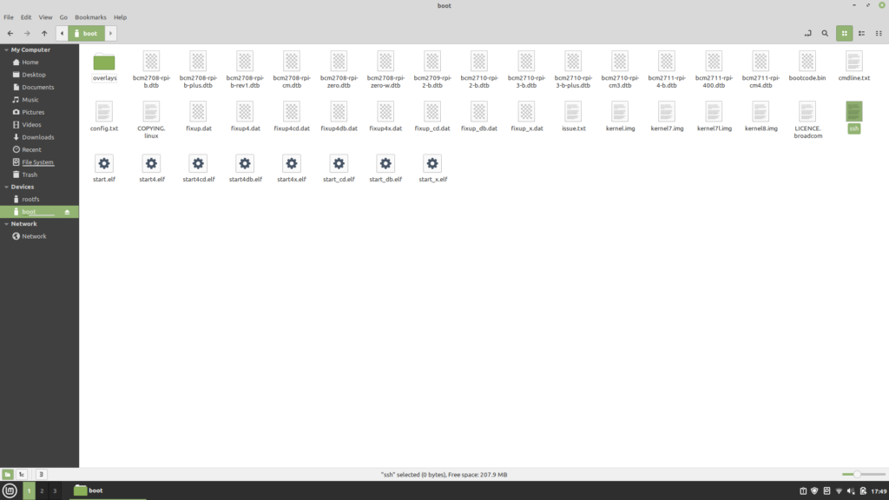
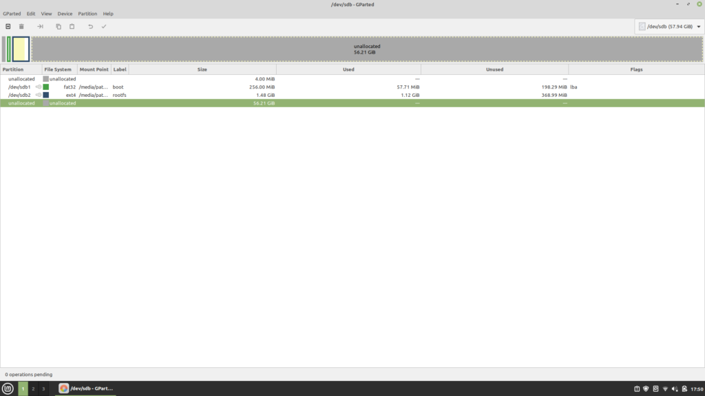

Raspberry Pi Router
Raspberry Pi's have a reputation for being one of the most versatile computers in existence. And for a good reason: They are cheap, they are tiny, and they run Linux. And many other things.
Yet another thing you can use a Raspberry Pi for is a router. While I've heard you can use them in place of your ISP router, I haven't tried this. Instead, you can create a small network within your home network, where you can provide filtering, create an extra layer of security, or whatever. In this tutorial, I'm going to walk you through how to set this up.
Reassurances
First, I promise this won't mess up your home network or any devices connected to it. Your router really won't even know its there. I mean, it will, but not in the sense that its talking to another router.
As far as speed goes, I don't do tons of network-intensive stuff so I can't speak to too much here. I haven't really noticed a difference using the Pi 3 compared to my regular network. Downloads are a little slower, but not much. I haven't done any uploads other than git pushes, but even here I haven't noticed a difference. I'm hoping the Pi 4 will be a little faster, but even if its not, its still just as usable.
Getting Started
In order to do this, you will need a Raspberry Pi 3 or later. I have a 3B and a 4. I originally did this with the Pi 3, but I'm probably going to sell it, so I'm moving everything to the Pi 4 as I write this article. Either way, the process is the same. You will need access to your router so you can plug the Pi in; I don't think you can do this wireless only.
First, download Raspberry Pi OS and write it to an SD card. I'm not going to walk you through this step because it varies by computer. You don't need the full desktop version; the Lite version is sufficient.
After you write the image, open the boot partition, and create an empty file called `ssh`. This will allow you to setup everything remotely. If you can plug in a monitor and keyboard, that will work too, but this is just as easy.

I would also resize the partition on the root file system. I'm not sure if this is completely necessary... I didn't do it the first time and everything seemed okay. But if you can, I would just do so.

Setting Up
After you plug the Pi in and boot it up, you can log in. To log in over ssh, use `ssh pi@raspberrypi.local`. It may take a few minutes (and a few tries) if its still booting. If it doesn't work after a long time, you may need to figure out the IP address. The default password is `raspberry`.
If you want to change the default password, run this command: `sudo passwd pi`.
First, make sure Pi OS is update to date. These commands will do the trick:
sudo apt update
sudo apt upgrade
Reboot when you're done (the command is `sudo reboot`...).
After applying any updates, we can install our needed software. We need three packages. First, `hostapd` provides the wireless access point. `dnsmasq` provides DNS management services, and `netfilter` provides firewall utilities. You can install with these commands:
sudo apt install hostapd
sudo apt install dnsmasq
sudo DEBIAN_FRONTEND=noninteractive apt install -y netfilter-persistent iptables-persistent
After installation, make sure the services are enabled on boot:
sudo systemctl unmask hostapd
sudo systemctl enable hostapd
Router Configuration (Router == Pi)
Okay, now we can configure it to act as a router. We will be assigning the Pi the `192.168.4.1` IP address. All devices connected to the Pi will be within the `192.168.4` range.
Open the configuration file: `sudo nano /etc/dhcpcd.conf`.
You will see a lot of stuff. Scroll to the very end and add this:
interface wlan0
static ip_address=192.168.4.1/24
nohook wpa_supplicant
Type `Crtl-S` to save and `Ctrl-X` to exit.
Now we have to configure the Pi to allow computers connected to it to access the outside internet. Basically, what happens is that all requests go through the Pi, and are then sent to the home router, and then the internet as a whole. When the requests are returned, the Pi returns them to the computer that requested them.
First, open `/etc/sysctl.d/routed-ap.conf`. Add this one line: `net.ipv4.ip_forward=1`.
Now configure the firewall: `sudo iptables -t nat -A POSTROUTING -o eth0 -j MASQUERADE`. Run this command to save: `sudo netfilter-persistent save`.
DHCP Configuration
In order for Pi to assign IP addresses and eventually provide filtering, we have to configure DHCP and DNS.
First, backup the original configuration: `sudo mv /etc/dnsmasq.conf /etc/dnsmasq.conf.old`.
Now, create and open a new configuration file: `sudo nano /etc/dnsmasq.conf`.
And add these lines:
# Interface to listen on
interface=wlan0
# Available IP addresses
dhcp-range=192.168.4.2,192.168.4.20,255.255.255.0,24h
domain=wlan
# Alias for the router
address=/gw.wlan/192.168.4.1
Configure Wireless
By default, the wireless radio (WiFi) is turned off until a country code is specified. You can turn it on with this command: `sudo rfkill unblock wlan`.
Now, we can configure the hostapd software. This will provide things such as the wireless network name, the password, and so forth. Pay attention to the `country_code` and `channel`. If you don't know your country code, research "ISO 3166-1" country codes. Wikipedia has a list of these, along with what the relevant channel is. Since I'm in the US, my code is... Yeah, US. If you're also in the US, you can leave the channel as is.
The Raspberry Pi 3B+ and onward can use either 5 GHz or a 2.4 GHz frequency band. I tried the 5 GHz but I couldn't get it to work. I think it has something to do with my home router running on the 2.4 GHz, but I don't actually know. I pretty much just left everything as is, except the country code, ssid (the network name), and the wpa_passphrase (the network password).
If you are interested in the frequency band, these are the possible values:
- a -> 802.11a (5GHz)
- b -> 802.11b (2.4GHz)
- g -> 802.11g (2.4GHz)
Again, if you change the frequency, you will likely need to change the channel.
Open `/etc/hostapd/hostapd.conf` and add these lines:
country_code=US
interface=wlan0
ssid=my_network
hw_mode=g
channel=7
macaddr_acl=0
auth_algs=1
ignore_broadcast_ssid=0
wpa=2
wpa_passphrase=my_password
wpa_key_mgmt=WPA-PSK
wpa_pairwise=TKIP
rsn_pairwise=CCMP
At this point, all the initial router configure is done. Reboot the Pi, and try connecting to your new network. If all goes well, you should be able to connect to websites.
Conclusion
This concludes the first part of my Raspberry Pi router tutorial. In the second half, we will install Pi-hole, which can be used to block ads and distracting websites. You can find it
here.
I tried to make sure this was working before I published. After I wrote it, I ran through it again to make sure I could still get the same results, and I did, so I assume everything is working. The same goes with the Pi-hole tutorial. If you do encounter any issues, feel free to drop me an email.